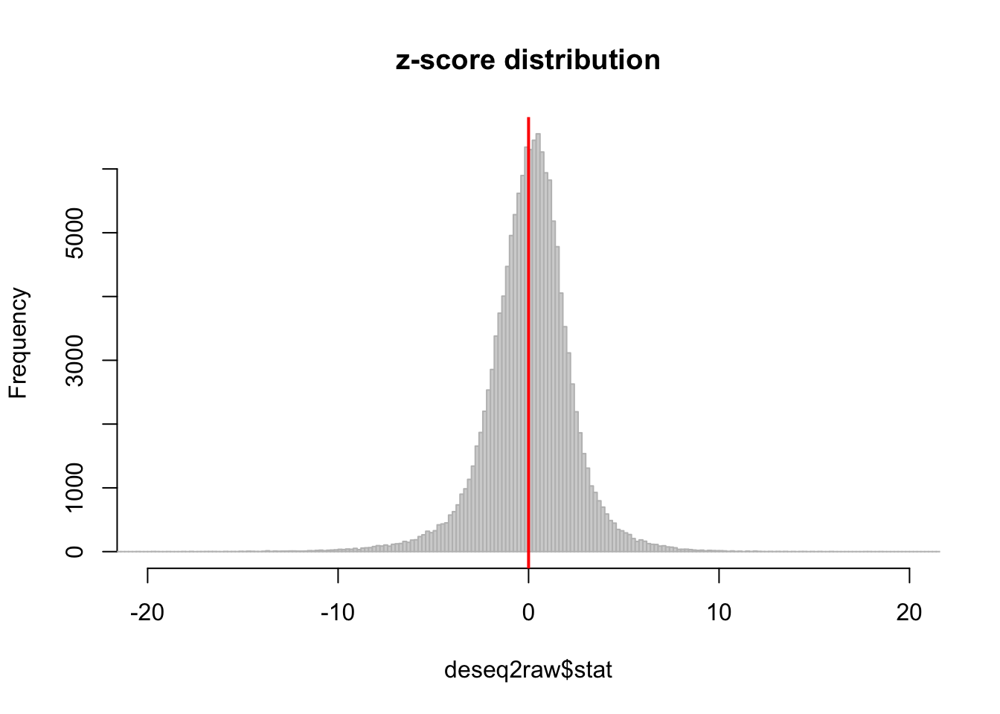

deseq2raw <- read.table("../data/DEseq2_alldata_0.01.txt", header=T)
dim(deseq2raw)## [1] 141642 33head(deseq2raw)## hchr hstart hend peak.name.1 cchr cstart cend peak.name
## 1 chr1 1028832 1030126 Peak65 chr1 1003480 1004697 Peak65
## 2 chr1 1030567 1031726 Peak66 chr1 1005138 1006298 Peak66
## 3 chr1 1083633 1084239 Peak70 chr1 1066713 1067348 Peak70
## 4 chr1 1087539 1091791 Peak71 chr1 1071346 1075957 Peak71
## 5 chr1 1109999 1111262 Peak72 chr1 1095046 1096287 Peak72
## 6 chr1 1124819 1131339 Peak74 chr1 1109261 1115701 Peak74
## H3K9me3_H_H28815 H3K9me3_H_H28126 H3K9me3_H_19101 H3K9me3_H_H21194
## 1 20.613152 10.018512 15.405097 14.5003975
## 2 15.235808 8.014809 22.007281 13.0503577
## 3 0.896224 2.003702 0.733576 0.7250199
## 4 67.216800 50.092559 54.284627 61.6266894
## 5 9.858464 13.024065 6.602184 7.2501987
## 6 128.160032 101.186968 104.901373 96.4276434
## H3K9me3_H_18511 H3K9me3_H_18489 H3K9me3_H_H21792 H3K9me3_H_H20682
## 1 12.283144 33.046083 23.113602 16.20460
## 2 20.687400 20.457099 14.446001 20.52583
## 3 3.232406 2.360434 1.926134 0.00000
## 4 62.708681 78.681149 73.193073 77.78209
## 5 12.283144 20.457099 20.224402 16.20460
## 6 94.386261 106.219551 114.604944 119.91405
## H3K9me3_H_19098 H3K9me3_C_C40210 H3K9me3_C_C3647 H3K9me3_C_C3651
## 1 40.7617672 13.706731 11.30004 8.530757
## 2 17.4693288 6.853366 8.07146 7.393323
## 3 0.5293736 11.993390 12.91434 4.549737
## 4 101.6397312 63.393632 59.72881 49.478390
## 5 20.1161968 6.853366 16.14292 16.492797
## 6 128.6377848 137.067312 121.07190 102.369082
## H3K9me3_C_C4955 H3K9me3_C_C8861 H3K9me3_C_C40280 H3K9me3_C_C3649
## 1 33.405046 15.50580 9.435839 10.869224
## 2 11.135015 11.92754 4.717919 11.774993
## 3 8.351262 19.08406 2.358960 6.340381
## 4 50.107570 82.30003 57.794512 51.628815
## 5 41.756308 26.24059 15.333238 11.774993
## 6 164.241478 98.99858 79.025149 109.598011
## baseMean log2FoldChange lfcSE stat pvalue padj
## 1 18.043737 0.58181403 0.3317012 1.7540308 7.942523e-02 2.331886e-01
## 2 13.360471 0.92756214 0.2780281 3.3362167 8.492694e-04 7.811183e-03
## 3 4.874937 -2.37991377 0.4830720 -4.9266233 8.366284e-07 1.983956e-05
## 4 65.103572 0.23851999 0.1746948 1.3653528 1.721422e-01 3.803898e-01
## 5 16.288410 -0.37246716 0.3185293 -1.1693342 2.422690e-01 4.680365e-01
## 6 112.925633 -0.03641734 0.1386814 -0.2625971 7.928612e-01 8.974144e-01
## tag Mean_H Mean_C
## 1 shared 20.660706 14.679063
## 2 human 16.877101 8.839088
## 3 chimp 1.378541 9.370304
## 4 shared 69.691711 59.204536
## 5 shared 14.002262 19.227744
## 6 shared 110.493179 116.053074hist(deseq2raw$stat, breaks=400, xlim=c(-20,20),col="lightgrey", border="gray", main ="z-score distribution")
abline(v=0,col="red",lwd=2)
y <- log2(deseq2raw[,9:24]) - log2(deseq2raw$baseMean)
species <- as.factor(c(rep("H", 9), rep("C",7)))This R Markdown site was created with workflowr